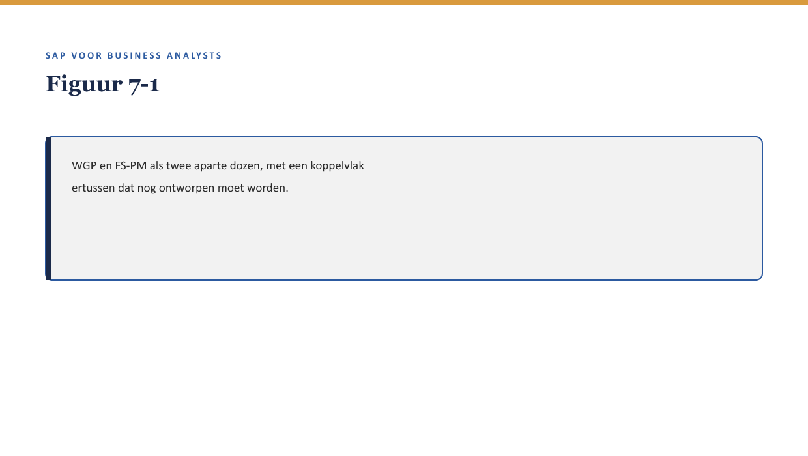

Deel 7 — Integratie & interfaces
Slidedeck · Niveau 1 Fundamenten · Cursus SAP voor Business Analysts · Ductus
Slidetypen conform de Ductus-sjabloonfuncties: titleSlide, sectionSlide, bulletsSlide, statementSlide, quoteSlide, tableSlide, figureSlide, opdrachtSlide.
Slide 1 — titleSlide
Integratie & interfaces Deel 7 · Niveau 1 Fundamenten Cursus SAP voor Business Analysts
Slide 2 — bulletsSlide
Wat we vandaag doen
- WGP blijft bestaan naast FS-PM — een nieuw koppelvlak
- Drie integratiepatronen: IDoc, API, middleware
- Synchroon versus asynchroon
- Drie vragen over foutafhandeling die elke BA kan stellen
Slide 3 — figureSlide

Slide 4 — sectionSlide
Drie integratiepatronen
Slide 5 — figureSlide

Slide 6 — tableSlide
Drie patronen
| Patroon | Kenmerk |
|---|---|
| IDoc | vast berichtformaat, klassiek |
| API | taakgericht, direct antwoord mogelijk |
| Middleware | tussenlaag die vertaalt en routeert |
Slide 7 — opdrachtSlide
Opdracht 7.1 — Welk patroon is dit?
a. “Taakgericht verzoek, direct het saldo terug” b. “Alle berichten via een tussenlaag” c. “Vast berichtformaat, periodiek verstuurd”
Slide 8 — sectionSlide
Synchroon versus asynchroon
Slide 9 — figureSlide

Slide 10 — statementSlide
Geaccepteerd door WGP. Nooit aangekomen bij de kernadministratie. Zonder foutmelding. Aan geen van beide kanten.
Slide 11 — quoteSlide
Bij een synchrone koppeling weet je meteen of iets is mislukt. Bij een asynchrone koppeling moet iemand expliciet ontworpen hebben hóe en wanneer een fout zichtbaar wordt.
— Kernzin, reader §4
Slide 12 — opdrachtSlide
Opdracht 7.3 — Het WGP 2.0-incident ontleed
Synchroon of asynchroon? Welke van de drie vragen (reader §5) had dit vroegtijdig blootgelegd?
Slide 13 — sectionSlide
Drie vragen over foutafhandeling
Slide 14 — bulletsSlide
De drie vragen
- Wat gebeurt er als dit bericht niet aankomt — merkt iemand dat?
- Synchroon of asynchroon — en hoe lang duurt onzekerheid?
- Is dit koppelvlak ooit end-to-end getest, beide kanten samen?
Slide 15 — opdrachtSlide
Opdracht 7.4 — Drie vragen toepassen op FS-PM/WGP
Formuleer de drie vragen, toegespitst op het nieuwe koppelvlak — niet generiek herhaald.
Slide 16 — bulletsSlide
Samenvatting in vijf zinnen
- IDoc, API, middleware: drie manieren om te koppelen, geen van drie hoeft de BA te ontwerpen
- Synchroon geeft direct duidelijkheid; asynchroon vergt expliciete foutafhandeling
- Het WGP 2.0-incident is een asynchrone koppeling zonder zichtbare foutafhandeling
- Drie vragen toetsen elk interfaceontwerp: wat als het misgaat, hoe lang duurt onzekerheid, is het end-to-end getest
- Deze vragen zijn generiek herbruikbaar, buiten SAP en buiten deze casus
Slide 17 — titleSlide
Volgende deel Rapportage & analytics voor BA’s Deel 8